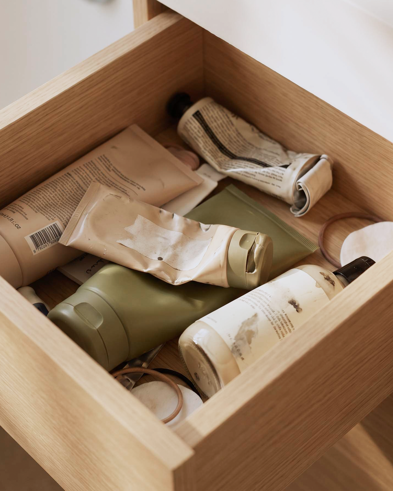
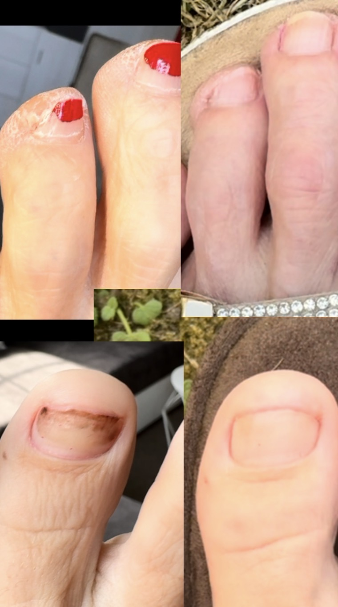

Molosoc
Foot care you'll actually stick with
Molosoc is a foot care brand built around one idea: most people already own a cream that works — they just never finish the routine around it. The cream is already in your drawer. Molosoc is the missing piece that helps it finish the job, one short session at a time.
Why foot care never sticks
Feet deserve real care, not just intent
Buying the cream was never the hard part. Finishing the routine is. Molosoc is for what comes after the good intention.
Care should be simple enough to actually stick
Routines survive on less friction, not more willpower. That's the design brief here.

You don't need new products — you need the right ritual
Not another cream. The accessory that makes the one you own actually work.
Foot care is self-care, not vanity
Ten quiet minutes, just for you — not for anyone watching.
How it helps
The cream you own, finally finished
Locks in moisture
Seals cream against skin for the length of the session.
Reduces mess and slipping
No greasy floors, no ruined sheets, no reason to stop early.
Works with your favorite cream
Cream-agnostic by design — use whatever you already trust.
Easy self-care ritual
Soft, cared-for feet from ten quiet minutes, not a new habit to learn.
Real results
Three months in, no filters

How Molosoc helps right now
Meet the Foot Cover
This is where Molosoc shows up today.
Meet the Foot CoverCracked heels & dry skin
Cracked heels form when dry skin loses elasticity and splits under pressure — they heal with consistent moisture, not overnight fixes.
Ingrown toenails
An ingrown toenail starts at the nail edge, not the skin around it — tight shoes and short trims are usually the real cause.
Hardened skin & calluses
Hardened skin builds up gradually from pressure and friction — it softens with consistent care, not a one-time filing session.
Dry skin on feet
Feet dry out differently than the rest of the body — socks, showers, and season all play a part, and moisturizing alone doesn't always fix it.
Making the cream you already own actually work
Most foot creams fail from inconsistent use, not a bad formula — the fix is finishing the routine, not switching products.

The reusable alternative
What is a moisture-lock foot cover?
Not every foot mask works the same way. Here's the one Molosoc believes in.
See how it works